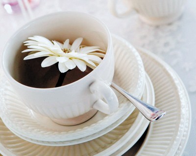

荐！脑族必喝的健康饮品推荐
编辑：琉璃 发布于：2012-03-06 11:31 文章来源：i手机原创 我要评论
如今，以计算机维生的人越来越多，天天坐在电脑前面，既要维系健康美丽，又要与岁月硬撑，不良的坐姿，时不时的熬夜，时间久了身体可是会抗议的；在这里为广大的电脑一族介绍几种健康茶饮，不但可以对抗辐射，还能保护眼睛，舒缓情绪呢！
1、绿茶
绿茶是近年来为人所津津乐道的养生饮品，因为其中含强效的抗氧化剂茶酚以及维他命C，不但可以清除体内的自由基，还能使副肾皮质分泌出对抗紧张压力的荷尔蒙，当然绿茶中所含的少量咖啡因也可以刺激中枢神经，提振精神。

2、枸杞茶枸杞子含有丰富的β胡萝卜素、维生素B1、维生素C、钙、铁，具有补肝、益肾、明目的作用，因为本身就具有甜味，不管是泡茶还是当零嘴来吃，对计算机族的眼睛酸涩、疲劳、视力加深的问题都有很大的益处。
3、菊花茶
有明目清肝的功效，有些人就干脆菊花加上枸杞一起泡来喝，或是用蜂蜜菊花茶，都对疏肝解郁有帮助。
4、绿豆薏仁汤
绿豆可以清热解毒、利尿消肿，薏仁则可以健脾止泻，轻身益气，对于经常需要熬夜的人或是心烦气躁、口干舌燥、便秘、长青春痘的朋友，除了多吃蔬菜水果与补充水份外，把绿豆薏仁汤当点心食用，对于消暑除烦也有帮助。

四物汤是由当归、川芎、白芍和熟地4味中药组成，其中又以当归、熟地为主药。熟地含有甘露醇、维生素A等成分，与当归配合，可使当归的主要成分阿魏酸含量增加，使当归补血活血疗效增强，能对付女性脸色苍白，头晕目眩，月经不调、量少或闭经等病症，也被后世医家称为“妇科第一方”。
6、杜仲茶
杜仲具有补血与强壮筋骨的作用，对于经常久坐，腰虽背痛很有帮助，男女都可以喝，若是女性朋友还可以在生理期的末期与四物汤一起服用。
7、决明子茶
决明子有清热、明目、补脑髓、镇肝气、益筋骨的作用，若有便秘的人还可以在晚餐饭后饮用，对于治疗便秘很有效果。
小编建议：绿茶最好在白天饮用，以免影响睡眠；身体是革命的本钱，各位电脑族朋友谨记注意身体健康啊！